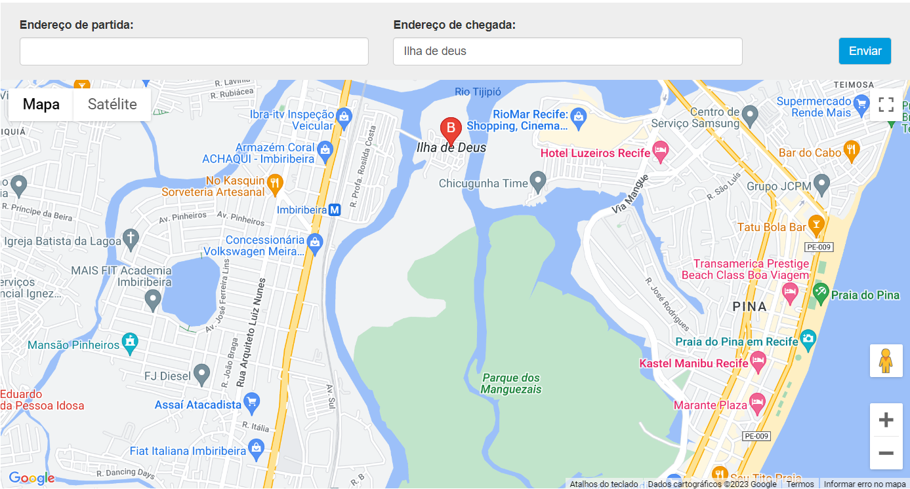

Ilha de Deus
Localizada no centro de um dos maiores manguezais urbanos do Brasil, a Ilha de Deus começou a ser ocupada nas primeiras décadas do século XX, onde desde o início de sua formação, a pesca constitui a atividade econômica predominante, sejam camarões, caranguejos e unhas-de-velho, a siris e sururus. Recentemente, por meio do trabalho do Centro Saber Viver, a comunidade se abriu para o Turismo de Base Comunitária, uma alternativa para divulgar o potencial natural ali existente e oferecer a visitantes e turistas experiências autênticas e uma imersão no cotidiano simples e encantador da Ilha de Deus. Passeios de catamarã pelo rio, oficinas de gastronomia e artesanato, intercâmbio social e circuitos pedagógicos são apenas alguns dos produtos turísticos que podem ser adquiridos e que põem pessoas de diversas partes do país e do mundo em contato com o que a Ilha possui de mais fascinante: o cotidiano de seu povo.
Passeios
PASSEIO DE BAITEIRA
Que tal conhecer um dos maiores manguezais urbanos da América Latina de um jeito diferente e através de quem o conhece bem? Na Ilha de Deus é possível fazer um passeio de barco com pescadores da comunidade, ir até o manguezal, participar da pesca do sururu e do marisco e, ao mesmo tempo, contemplar a diversidade natural da região.
Nº de Visitantes: 01 a 15
Duração da Vivência: 1h30
ILHA TOUR
O Ilha Tour é uma vivência de natureza, cultura e gastronomia na charmosa comunidade de pescadores Ilha de Deus, onde o visitante conhece a história local, visita o mangue de pertinho, pesca sururu e camarão com os moradores locais e interage com a vida típica da comunidade.
Nº de Visitantes: 10 a 50
Duração da Vivência: 2h
Como Chegar
É fácil de chegar no Recife por todo lugar, terra, água e ar. Dispomos de um complexo portuário com terminal marítimo de passageiros, que recebe navios e cruzeiros. Por terra o Terminal Integrado de Passageiros (TIP) é o segundo maior do país e trabalha com um fluxo de aproximadamente 12 mil pessoas embarcando e desembarcando por dia. Por último, temos o Aeroporto Internacional dos Guararapes/Gilberto Freyre que recebe em média 5 milhões de turistas por ano e tem aproximadamente 31 destinos nacionais e 13 destinos internacionais conectados diretamente.
